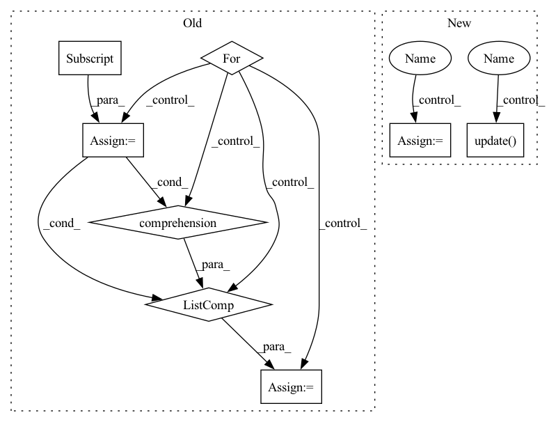

Pattern ID :25380
Before Change
embedding_batch = embedding_batch.numpy()
knn_indices = embedding_tree.query(embedding_batch, k=k, return_distance=False)
knn_means = []
for i, point in enumerate(embedding_batch):
point_knn_indices = knn_indices[i]
knn_data = np.array([dataset[idx] for idx in point_knn_indices] )
knn_means.append(np.mean(knn_data, axis=0))
knn_means = np.array(knn_means)
knn_r2.append(r2_score(data, knn_means))After Change
)
embedding_tree = KDTree(embedding)
if verbose :
prog_bar = tqdm(total=len(dataloader))
knn_metric = []
for data, embedding_batch in dataloader:
data = data.numpy()
embedding_batch = embedding_batch.numpy()
knn_indices = embedding_tree.query(
embedding_batch, k=k + 1, return_distance=False
)[:, 1:]
knn_data = dataset[knn_indices]
knn = np.mean(knn_data, axis=1)
knn_metric.append(metric.transform(data, knn))
if verbose :
prog_bar.update( 1)
return np.array(knn_metric)
def linear_probe_reconstruction(In pattern: SUPERPATTERN
Frequency: 3
Non-data size: 8
Instances Fragment ID: 77595648
Project Name: jgraving/cne
Commit Name: 6d4f69204f6bbfa424a9dbd86eec6b16d90db078
Time: 2023-01-23
Author: jgraving@gmail.com
File Name: selfsne/eval.py
M Class Name: AnonimousClass
N Class Name: AnonimousClass
M Method Name: knn_probe_reconstruction(8)
N Method Name: knn_probe_reconstruction(6)
M Parent Class:
N Parent Class:
M File Name: selfsne/eval.py
N File Name: selfsne/eval.py
M Start Line: 104
M End Line: 120
N Start Line: 105
N End Line: 159
Before Change
if lowercase:
attr = "NORM"
matcher = PhraseMatcher(self.nlp.vocab, attr=attr)
for name, df in dfs.items():
df = df[df.apply((lambda x: self.entry_filter(x, lowercase=lowercase)), axis=1)]
terms = list([syn for syn in df[SYN]] )
iris = list(df[IDX])
assert len(list(terms)) == len(list(iris))
for iri, term in zip(iris, terms):After Change
def _create_phrasematcher(self, parsers: List[OntologyParser]):
orth_matcher = PhraseMatcher(self.nlp.vocab, attr="ORTH")
lower_matcher = PhraseMatcher(self.nlp.vocab, attr="NORM")
for parser in parsers:
// TODO: fix api call
synonym_data = parser.collect_aggregate_synonym_data(False)
generated_synonym_data = parser.generate_synonyms()
generated_synonym_data.update( synonym_data)
logging.info(f"generating {len(generated_synonym_data)} patterns for {parser.name}")
patterns = list(self.nlp.tokenizer.pipe(generated_synonym_data.keys()))
for i, (syn, syn_data_list) in enumerate(generated_synonym_data.items()):
is_lower = syn.islower()
for syn_data in syn_data_list:
for idx in syn_data.ids:
// if self.entry_filter(syn,syn_data,lowercase) and len(syn_data.generated_from)==0: Fragment ID: 77595646
Project Name: astrazeneca/kazu
Commit Name: e6b1e7e6235e8562c8164e4a5b1d6b4f946c3fab
Time: 2022-11-30
Author: richard.jackson4@astrazeneca.com
File Name: kazu/modelling/ontology_matching/ontology_matcher.py
M Class Name: OntologyMatcher
N Class Name: OntologyMatcher
M Method Name: _create_phrasematcher(2)
N Method Name: _create_phrasematcher(3)
M Parent Class:
N Parent Class:
M File Name: kazu/modelling/ontology_matching/ontology_matcher.py
N File Name: kazu/modelling/ontology_matching/ontology_matcher.py
M Start Line: 340
M End Line: 356
N Start Line: 339
N End Line: 366
Before Change
embedding_batch = embedding_batch.numpy()
knn_indices = embedding_tree.query(embedding_batch, k=k, return_distance=False)
knn_means = []
for i, point in enumerate(embedding_batch):
point_knn_indices = knn_indices[i]
knn_data = np.array([dataset[idx] for idx in point_knn_indices] )
knn_means.append(np.mean(knn_data, axis=0))
knn_means = np.array(knn_means)
knn_r2.append(r2_score(data, knn_means))After Change
embedding_tree = KDTree(embedding)
if verbose:
prog_bar = tqdm(total=len(dataloader))
knn_metric = []
for data, embedding_batch in dataloader:
data = data.numpy()
embedding_batch = embedding_batch.numpy()
knn_indices = embedding_tree.query(
embedding_batch, k=k + 1, return_distance=False
)[:, 1:]
knn_data = dataset[knn_indices]
knn = np.mean(knn_data, axis=1)
knn_metric.append(metric.transform(data, knn))
if verbose:
prog_bar.update( 1)
return np.array(knn_metric)
def linear_probe_reconstruction( Fragment ID: 77595647
Project Name: jgraving/selfsne
Commit Name: 6d4f69204f6bbfa424a9dbd86eec6b16d90db078
Time: 2023-01-23
Author: jgraving@gmail.com
File Name: selfsne/eval.py
M Class Name: AnonimousClass
N Class Name: AnonimousClass
M Method Name: knn_probe_reconstruction(8)
N Method Name: knn_probe_reconstruction(6)
M Parent Class:
N Parent Class:
M File Name: selfsne/eval.py
N File Name: selfsne/eval.py
M Start Line: 104
M End Line: 120
N Start Line: 105
N End Line: 159